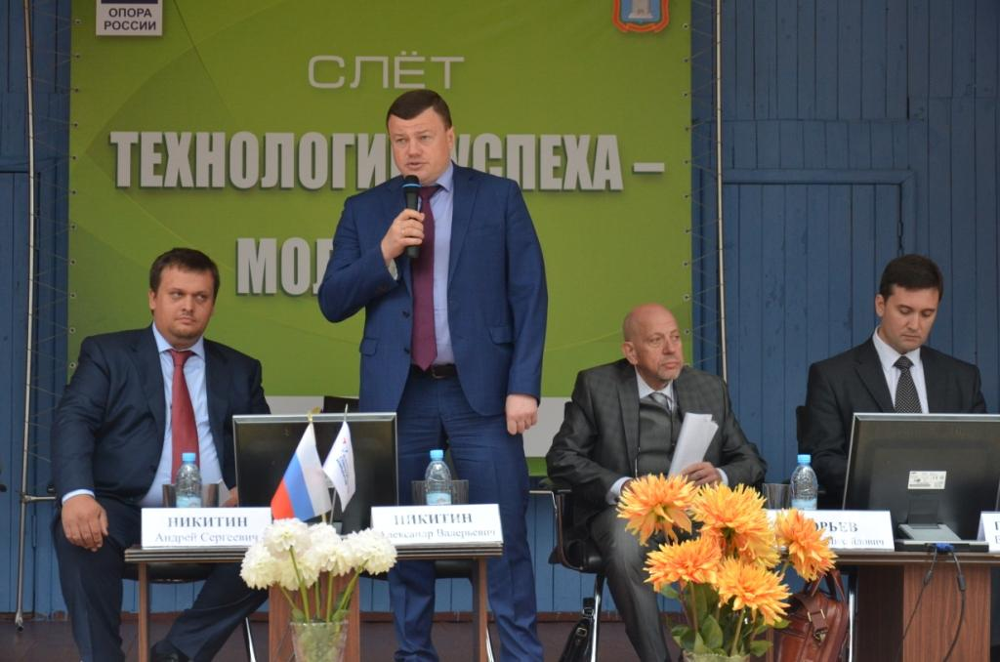

Технологии успеха – молодежи!

20 - 21 августа на базе детского оздоровительного лагеря «Солнечный» прошел V слет молодых предпринимателей «Технологии успеха – молодежи!» (Инновационный лагерь). Цикл мероприятий открыло совещание по вопросам улучшения инвестиционного климата, в котором приняли участие врио главы администрации Тамбовской области Александр Никитин, генеральный директор Агентства стратегических инициатив Андрей Никитин, начальник управления экономической политики администрации Тамбовской области Сергей Юхачев, директор НОУ «Региональный центр управления и культуры» Ольга Лаптева, представители муниципалитетов области и бизнес-сообщества.
Речь шла о важности Национального рейтинга состояния инвестиционного климата в субъектах РФ, о месте в нём Тамбовщины, направлениях требующих особого внимания в настоящее время.
Наша область входит в число лидеров Национального рейтинга, занимая в нем четвертое место, что свидетельствует об эффективной работе исполнительной власти в этом направлении. Это еще раз подтвердил руководитель АСИ Андрей Никитин. Так, он отметил, что тамбовские предприниматели высоко оценивают усилия исполнительной и законодательной властей региона по поддержке бизнеса, а инвесторы отмечают благоприятный деловой климат: без волокиты можно получить разрешение на строительство, зарегистрировать собственность, подключиться к сетям, пройти иные бюрократические процедуры.
Директор Тамбовского областного ГУП «Фонд содействия кредитованию малого и среднего предпринимательства Тамбовской области» Андрей Блудов, принял участие в круглом столе «Госзакупки: спрос и предложение», где рассказал о видах финансовой поддержки малого и среднего предпринимательства которые оказывает Фонд.
Особый интерес у участников круглого стола вызвала информация о предоставлении Фондом поручительств по договорам о предоставлении банковской гарантии. Андрей Блудов пояснил, что со второго полугодия 2015 года Фонд готов оказывать полный комплекс видов финансовой поддержки, определённых Министерством экономического развития Российской Федерации. Разработан и утверждён Регламент предоставления поручительств по договорам о предоставлении банковской гарантии, отобраны банки-партнёры:
Основными параметрами взаимодействия с субъектами малого и среднего предпринимательства являются следующие:
- размер одного поручительства Фонда не может превышать 15 млн. рублей и составляет до 50% от размера банковской гарантии;
- срок предоставления поручительства Фонда до 36 месяцев;
- стоимость поручительства составляет 0,5% годовых от суммы поручительства для заёмщиков, основной вид деятельности которых является приоритетным; 1% годовых для всех остальных заёмщиков.
Это удобный для малых компаний инструмент, позволяющий привлечь банковскую гарантию (на обеспечения заявки для участия в конкурсе, обеспечения исполнения контракта) без замораживания собственных средств.